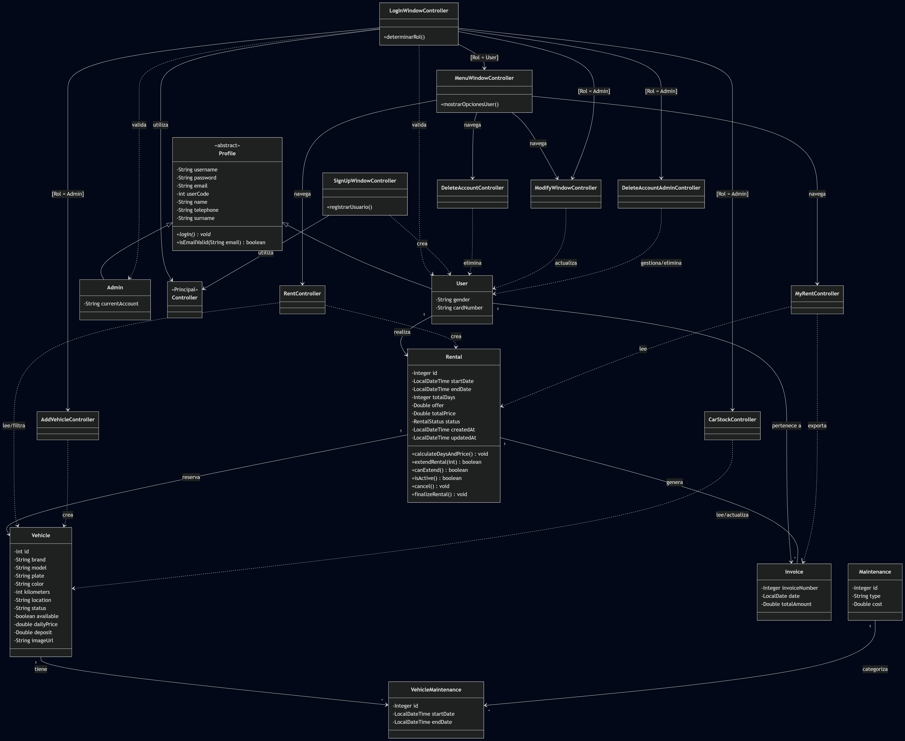
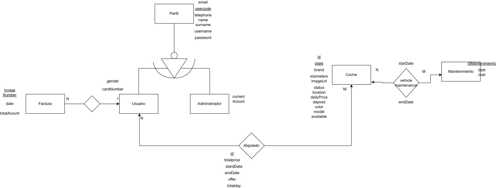

Arquitectura y Stack Tecnológico
La plataforma BizkaiKotxe se apoya en una arquitectura robusta de tres capas (Presentación, Negocio y Datos) para garantizar un servicio de alquiler eficiente y seguro.
- Frontend: Interfaz rica desarrollada en JavaFX 17 con diseño responsivo basado en FXML.
- Persistencia: Implementación de JPA y Hibernate para la gestión del ciclo de vida de los objetos.
- Base de Datos: Sistema relacional MariaDB optimizado para consultas de flota en tiempo real.
- Reporting: Generación dinámica de contratos y facturas mediante JasperReports.
Anexo de Diagramas Técnicos
Haz clic en cada sección para desplegar los diagramas detallados del sistema.
Mapa de Navegación (Flujo de Ventanas JavaFX)

Muestra la interacción entre los controladores LogIn, CarStock y Rent.
Modelo de Dominio (Diagrama de Clases UML)

Estructura de entidades User, Vehicle y Rental con sus respectivas relaciones de herencia y asociación.
Diseño de Base de Datos (Diagrama Entidad-Relación)

Mapeo físico de tablas y claves foráneas para la persistencia de datos en MariaDB.